Желейник
4 короткие округлые лапки, слиты с телом. Два фиолетовых рожка, два глаза, пятна. Использован утверждённый кадр.
D1 — глаз, D2 — глаз, D3 — рот, D4 — рожок, D5 — рожок, D6 — пятно, D7 — пятно
Рабочая разметка: две боковые и две нижние. При жесте двигать боковую лапку от её основания внутрь; не добавлять отдельный овал.
Исходный концепт
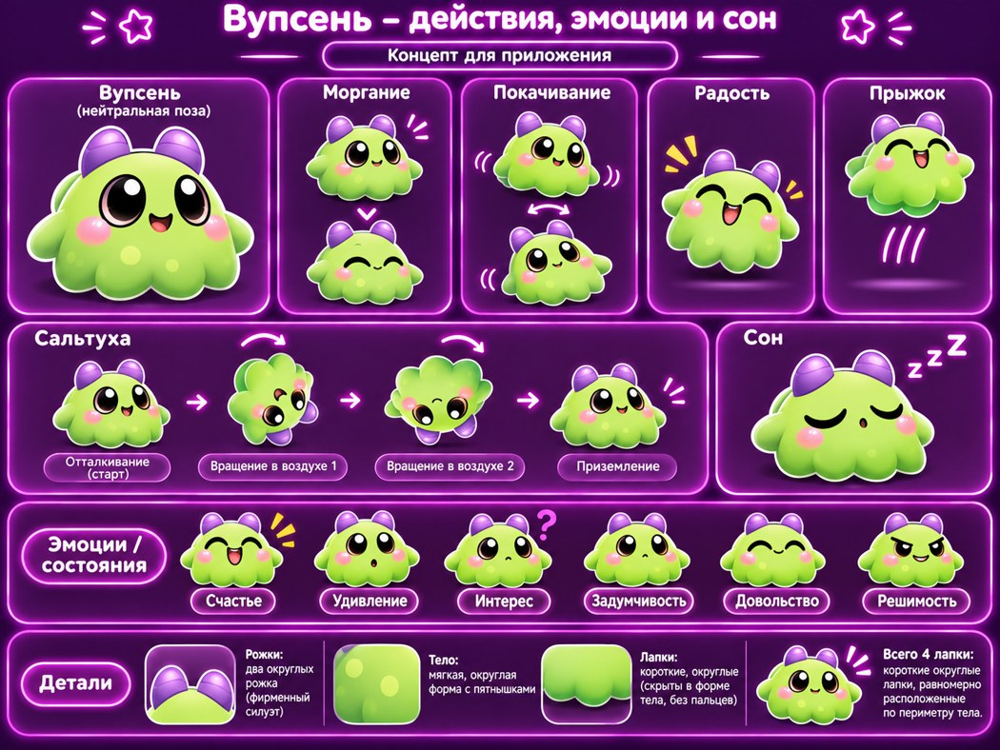
Растенник
4 лапки (в листе указано явно). Две передние видны; две задние под телом. Хохолок, ушки-листья, короткий хвост, пятна.
D1 — глаз, D2 — глаз, D3 — рот, D4 — хохолок, D5 — ушко, D6 — ушко, D7 — хвост
Передние округлые; не использовать ушки и хвост как лапки.
Исходный концепт
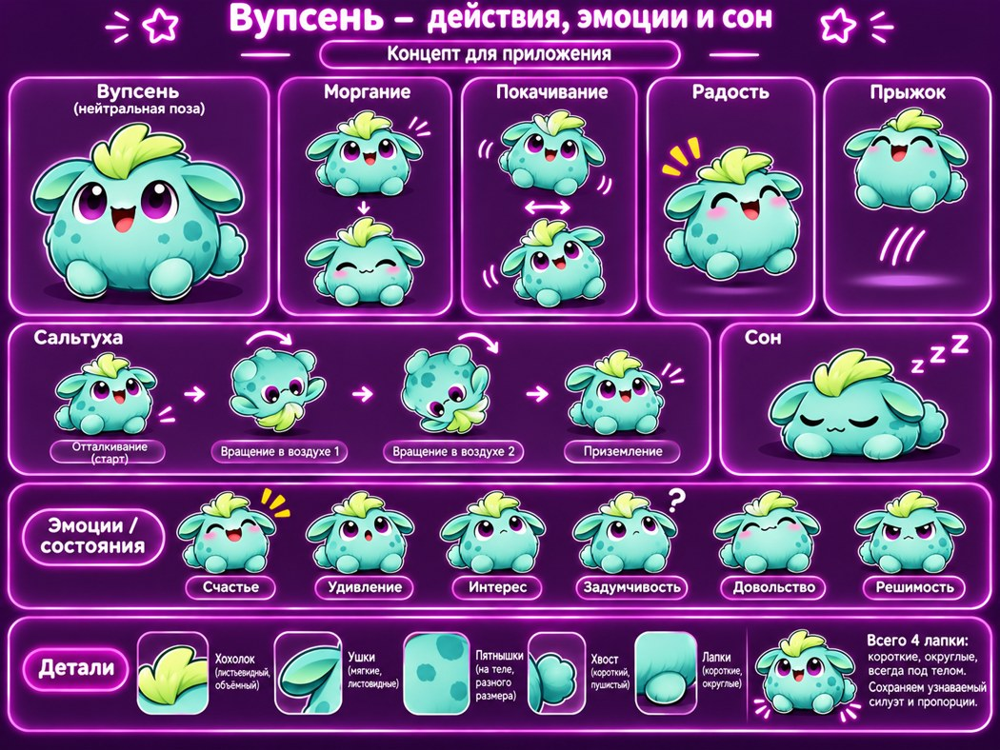
Рожастик
4 короткие округлые лапки, всегда под телом. Два рожка, пучки перьев, завитой хвост.
D1 — глаз, D2 — глаз, D3 — рот, D4 — рожок, D5 — рожок, D6 — перья, D7 — хвост
Не поднимать перья вместо лапок; точное крепление задней пары скрыто.
Исходный концепт
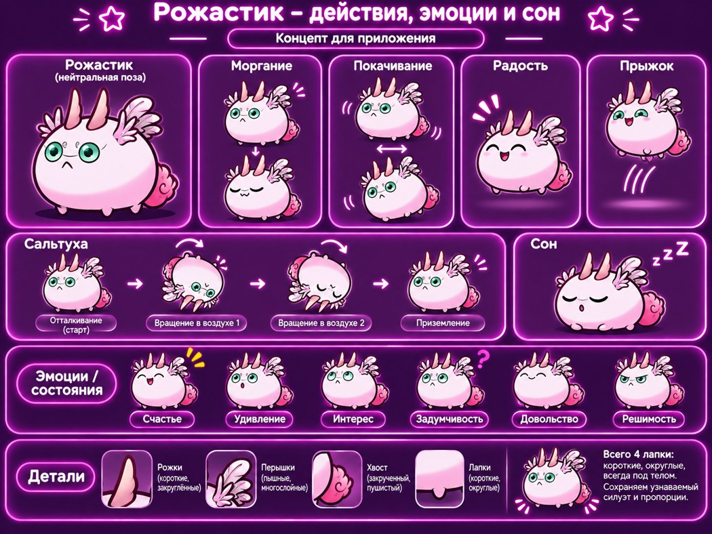
Одноглазик
6 лапок по листу: 2 округлые передние, 2 плоские боковые и 2 плоские задние. Один глаз.
D1 — глаз, D2 — рот
Передние всегда рядом; боковые и задние расходятся диагонально. Не считать верхние выступы лапками.
Исходный концепт
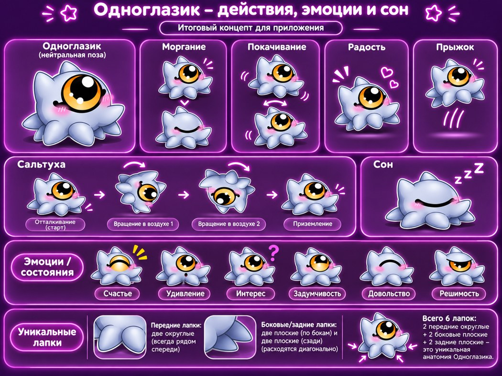
Пухлик
4 лапки: 2 передние и 2 задние. Мягкие округлые лапы, полосатые рожки, шерсть и пятна.
D1 — глаз, D2 — глаз, D3 — рот, D4 — рожок, D5 — рожок
Передние видимы; задние скрыты под шерстью в нейтральной позе.
Исходный концепт
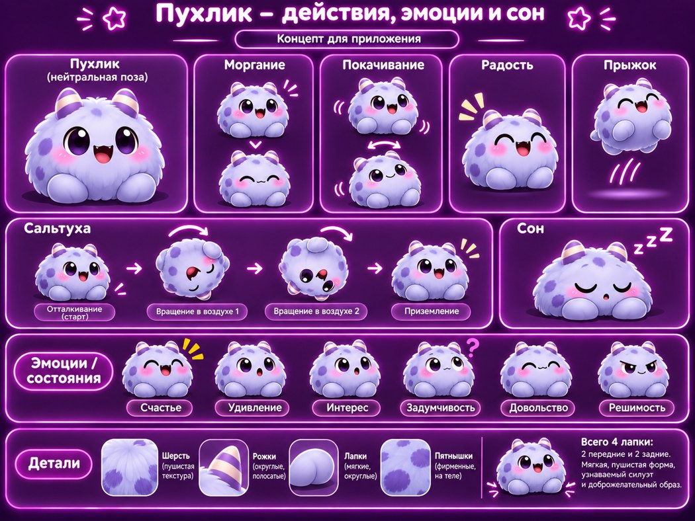
Языкастик
Кремовое тело, коричневые рожки, язык, пятнистый хвост. 4 лапки — рабочая гипотеза по общему правилу; точное число в индивидуальном листе не подписано.
D1 — глаз, D2 — глаз, D3 — рот/язык, D4 — рожок, D5 — рожок, D6 — хвост
Видимые короткие лапки под телом, задние уточнить; язык и хвост не лапки.
Исходный концепт
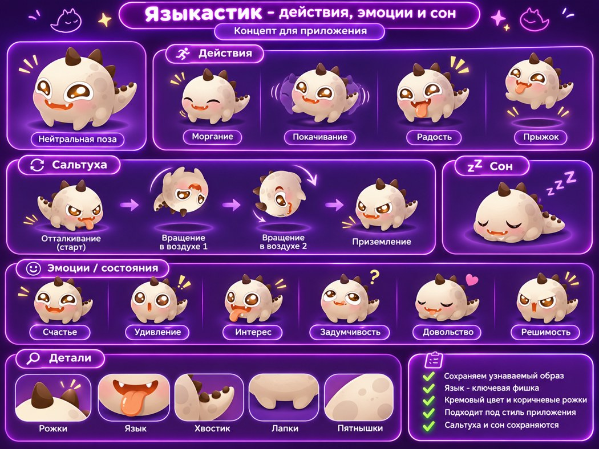
Мохнатик
Один глаз, золотистые рожки, слоистая пушистая фактура. Две лапки отчётливо видны спереди; 4 — рабочая гипотеза по прыжку и общему листу.
D1 — глаз, D2 — рот, D3 — рожок, D4 — рожок
Не путать пряди шерсти с лапками; задние проверить.
Исходный концепт
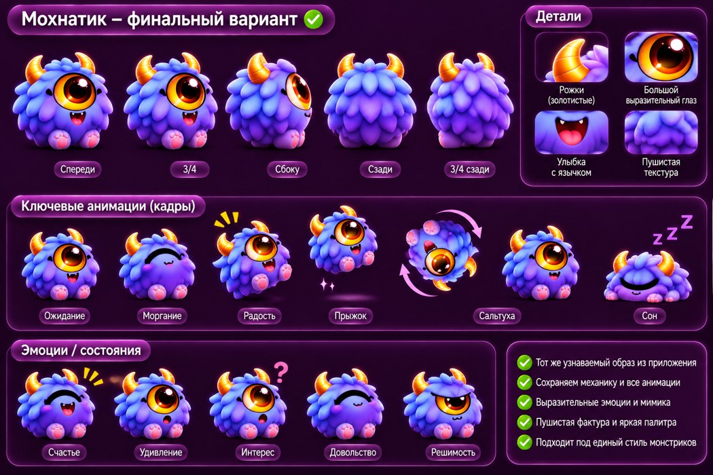
Пушистик
4 лапки по листу: передние маленькие, задние опорные. Острые пряди, золотистые рожки, два глаза.
D1 — глаз, D2 — глаз, D3 — рот, D4 — рожок, D5 — рожок
Пряди — часть силуэта, не конечности. Задние скрыты в спокойной позе.
Исходный концепт
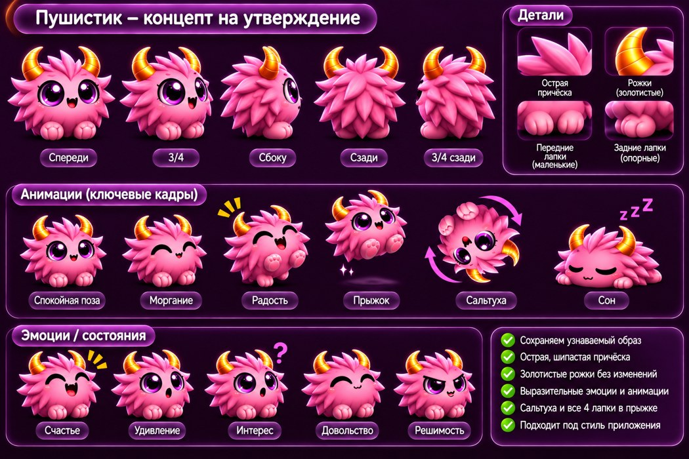
Вишенка
4 лапки на пару согласно листу, две ягоды соединены общими черешками. Два лица, общий листик.
D1 — глаз, D2 — глаз, D3 — глаз, D4 — глаз, D5 — рот, D6 — рот, D7 — листик, D8 — черешки
Не разделять ягоды; две лапки на каждой в качестве рабочей схемы.
Исходный концепт
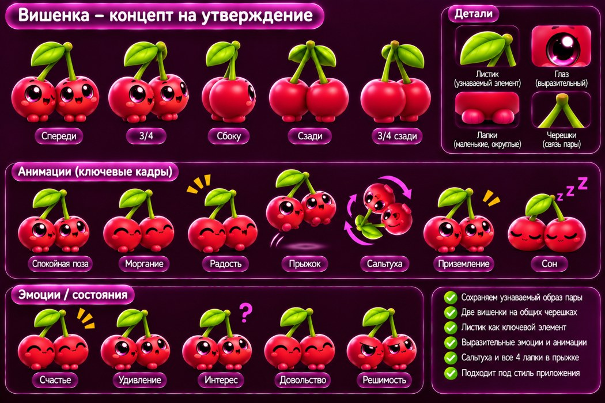
Клубничка
4 лапки по листу; спереди видны две округлые, задние частично скрыты. Листочки, цветок и семечки.
D1 — глаз, D2 — глаз, D3 — рот, D4 — цветок, D5 — листья
Поднимать переднюю лапку только от её основания; цветок не отделять.
Исходный концепт
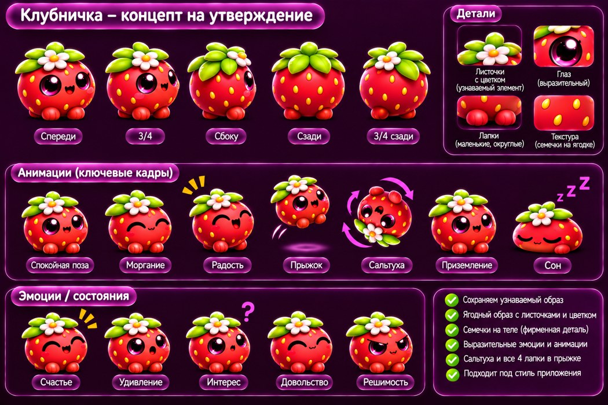
Лягушонок
4 лапки: две передние с пальчиками, две задние опорные. Крупные глаза, пятна и светлый живот.
D1 — глаз, D2 — глаз, D3 — рот, D4 — живот
Передние сгибаются у корпуса; задние обеспечивают отталкивание.
Исходный концепт
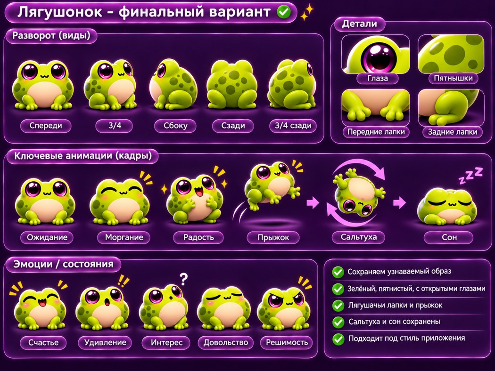
Котик
4 лапки по листу: две маленькие передние, две крупнее с подушечками. Ушки, полоски, хвост.
D1 — глаз, D2 — глаз, D3 — рот, D4 — ухо, D5 — ухо, D6 — хвост
Передние — для жестов; задние — опорные, в прыжке все 4 видны.
Исходный концепт
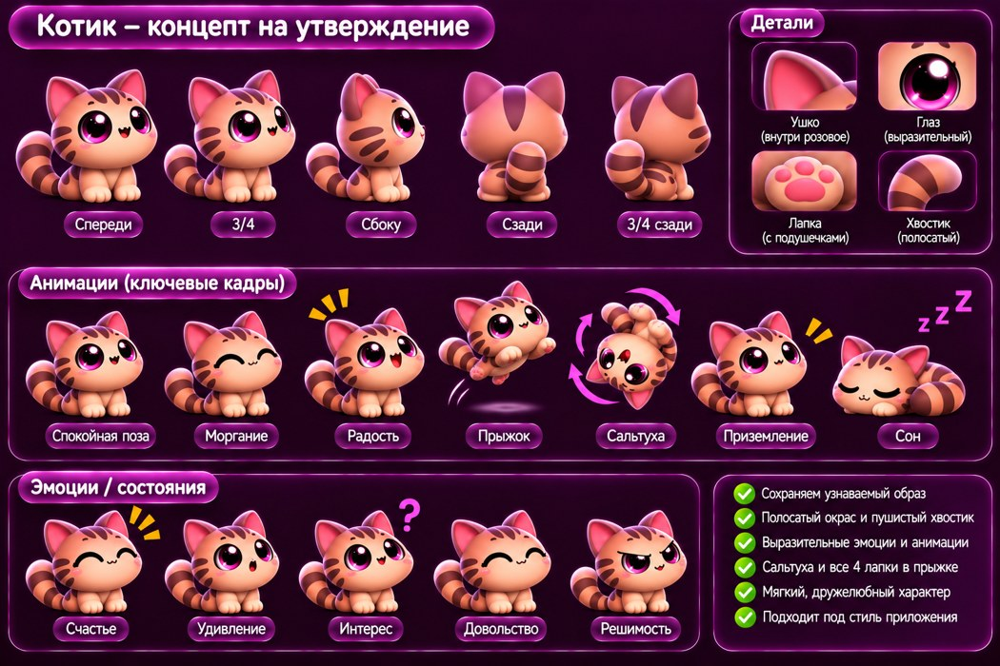
Мышка
4 лапки по листу: маленькие передние «ручные», задние опорные. Круглые уши, тонкий хвост, короткая мордочка.
D1 — глаз, D2 — глаз, D3 — рот, D4 — ухо, D5 — ухо, D6 — хвост
Передние могут подниматься к мордочке; задние остаются опорой.
Исходный концепт
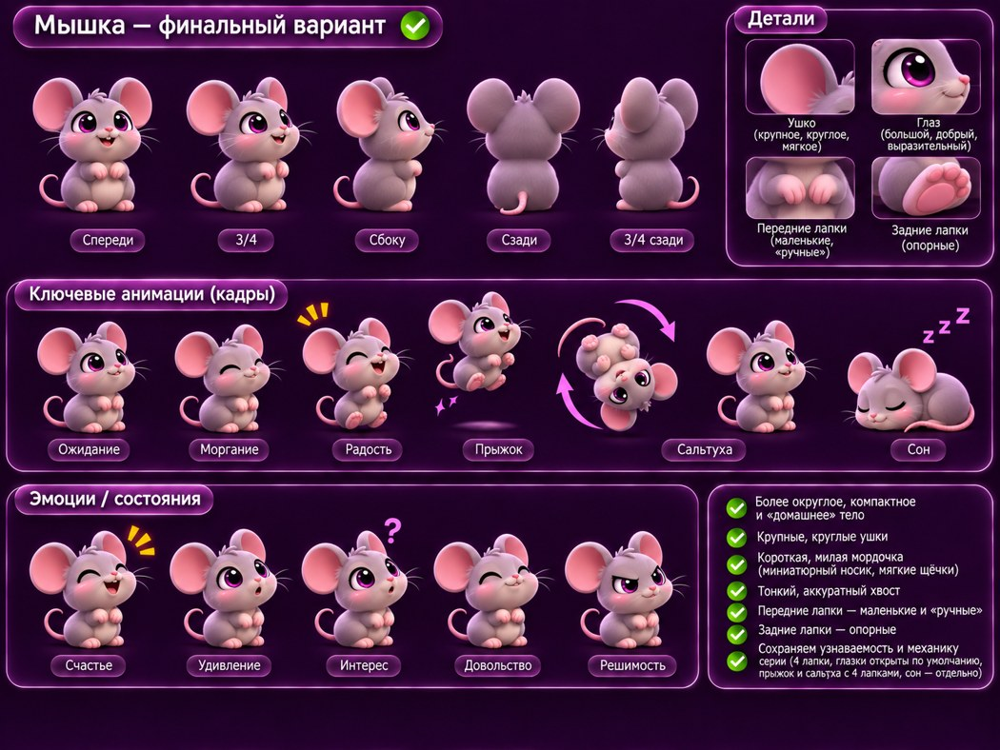
Крыска
4 лапки: маленькие передние хваткие, задние опорные. Заострённые уши, сегментированный хвост, удлинённая морда и резцы.
D1 — глаз, D2 — рот, D3 — ухо, D4 — ухо, D5 — хвост
Передние — жесты, задние — опора. Хвост отдельный.
Исходный концепт
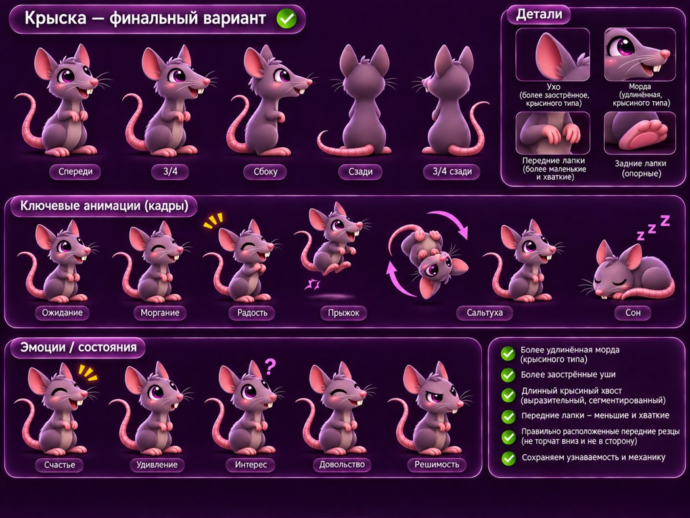
Осьминожка
Гибкие щупальца с присосками, пятна на голове, два глаза. Количество не установлено однозначно: лист упоминает «все 4 лапки», но рисунок показывает щупальца.
D1 — глаз, D2 — глаз, D3 — рот, D4 — пятна
Не утверждать число щупалец до согласования. Отмечены только видимые основания и концы.
Исходный концепт
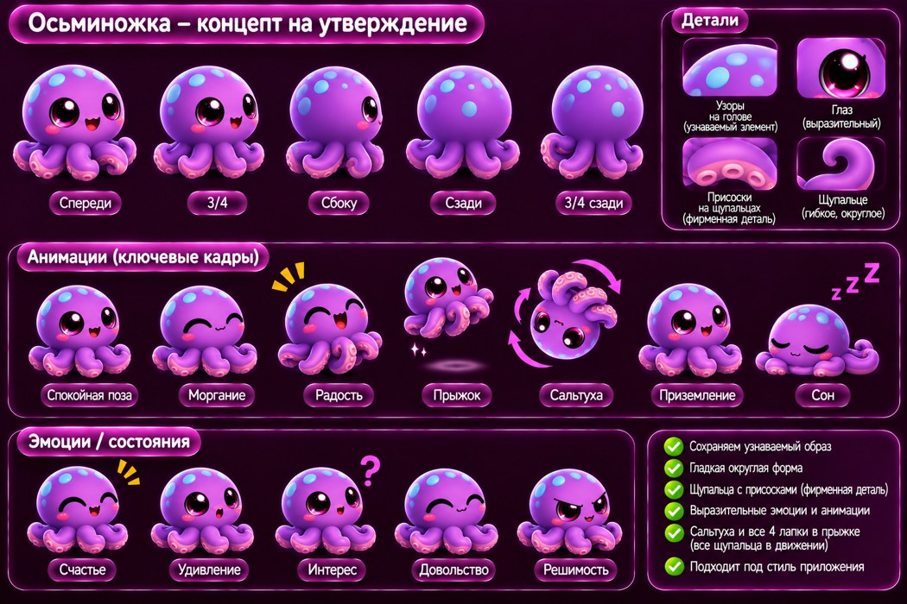
Слизень
Один глаз, желейное тело, верхняя капелька. Число отдельных лапок в листе не указано: видны округлые выступы основания.
D1 — глаз, D2 — рот, D3 — капелька
Не превращать капельки и выступы в дополнительные конечности. Пока анимировать тело целиком.
Исходный концепт
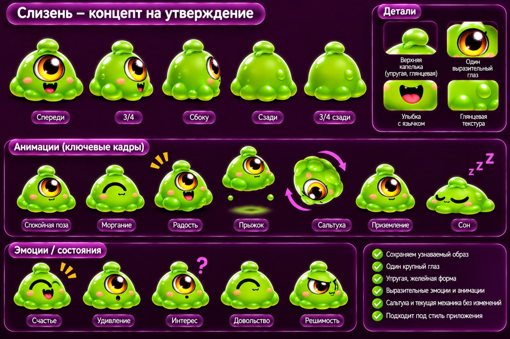
Скелетон
2 костяные руки, 2 ноги, пальцы. Капюшон с золотыми деталями, без хвоста.
D1 — глаз, D2 — глаз, D3 — рот, D4 — капюшон
Руки и ноги — отдельные суставные цепочки; не добавлять подушечки.
Исходный концепт
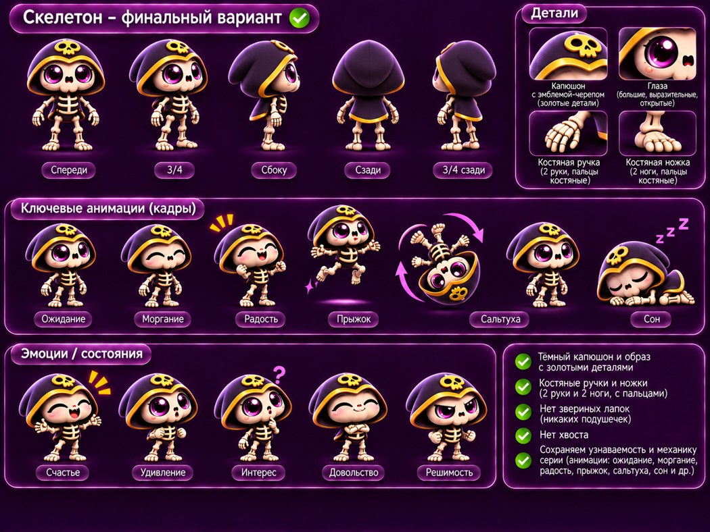
Скелетесса
2 костяные руки и 2 костяные ноги с пальцами по общему листу. Волосы, веночек, плащ.
D1 — глаз, D2 — глаз, D3 — рот, D4 — веночек, D5 — плащ
Руки сгибаются у плеча и локтя. Не добавлять звериные лапки или подушечки.
Исходный концепт
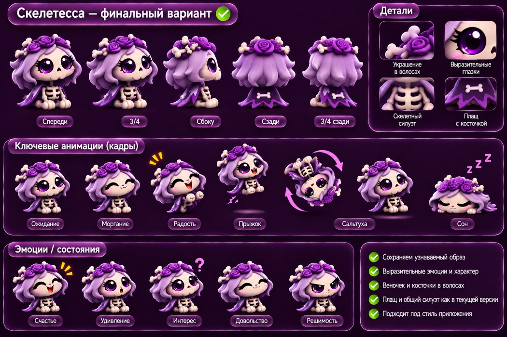
Утёнок
Два коротких жёлтых крылышка вместо передних лапок и две оранжевые перепончатые ножки. Два глаза, клюв, хохолок из 2–3 перышек, щёчки, короткий хвостик (вид сзади).
P1 — крылышко слева · P2 — крылышко справа · P3 — ножка слева · P4 — ножка справа · D1 — глаз · D2 — глаз · D3 — клюв · D4 — хохолок · D5 — щёчка · D6 — щёчка
Крылышки двигаются от боковых креплений; ножки — от нижних креплений. При жестах использовать крылышко, не создавать дополнительную лапку. Хвостик не является конечностью.
Исходный концепт (включая вид сзади)
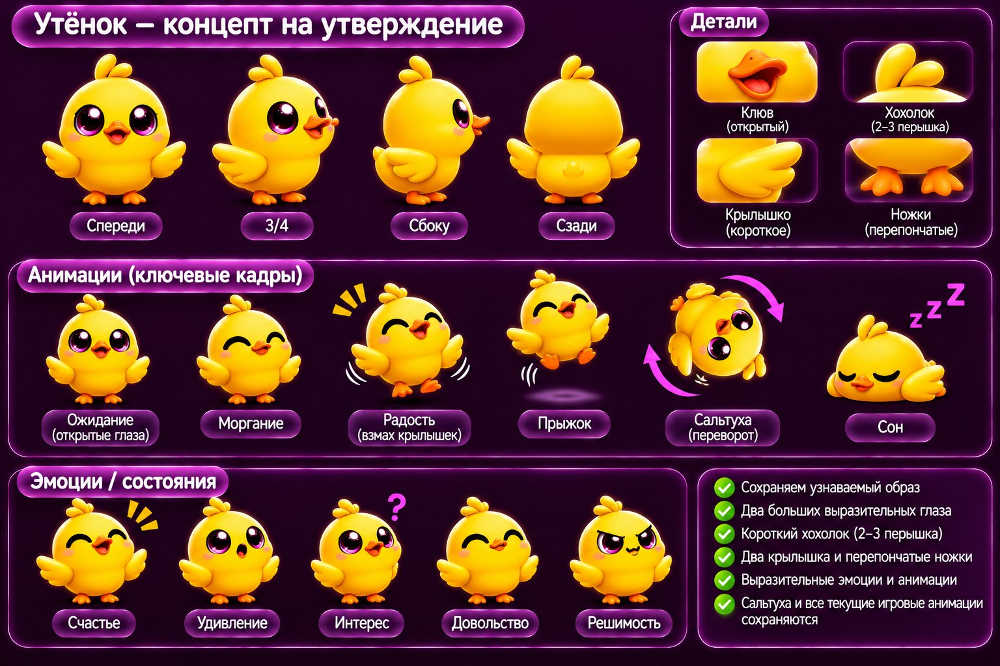
Утёнок добавлен из отдельного утверждённого концепта. У Желейника сохранены 10 утверждённых анимаций; задумчивость не согласована.